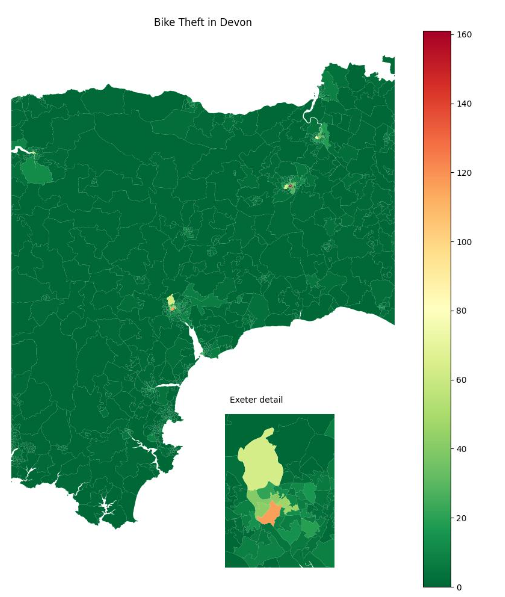

import folium20 Interactive Maps - Setting Up
20.1 Why use interactive plots?
Very often, a static plot is a really good way to display geographic data.
You have total control over the output and what to highlight to your stakeholders
… but what if they’re interested in getting a closer look at those other areas with a higher rate that we haven’t provided a zoomed-in map for?
In the map below, we’ve provided an inset map for one of the more dense regions, but we can see at least two more that it would be valuable to interrogate further.

If you are doing a single report where you have time and space to craft it around what you are seeing in the data, a static map can really help direct and drive the narrative you want to tell.
However, with regular reports and dashboards, this may not work so well. Here, interactive maps can really shine by allowing your end users to explore the regions or points of interest - no matter where or how densely-packed they may be.
20.1.1 Libraries for interactive mapping
Leaflet.js is an open-source JavaScript library for maps.
However, we don’t want to have to deal with writing things in JavaScript, or have to work out how to turn the output into something that Python can understand and display.
Instead, we use the folium Python library, which acts as a bridge between Python and Leaflet.js.
Before making any interactive maps, we run
20.2 Setting up a base map
We start by importing folium
Then we set up a base map.
Notice we’re using lat/long to determine where the map starts.
# Create the blank map object
bike_crime_map_interactive = folium.Map(
location=[55, -3.5],
zoom_start=5.25,
tiles='cartodbpositron'
)
# Display the map object
bike_crime_map_interactiveMake this Notebook Trusted to load map: File -> Trust Notebook
20.2.1 Changing the zoom
Changing the zoom parameter affects how zoomed in we are when the map initially loads.
# Create the blank map object
bike_crime_map_interactive = folium.Map(
location=[55, -3.5],
zoom_start=8,
tiles='cartodbpositron'
)
# Display the map object
bike_crime_map_interactiveMake this Notebook Trusted to load map: File -> Trust Notebook
20.2.2 Changing the starting location
Changing either the latitude or longitude changes where we are when we load the map.
# Create the blank map object
bike_crime_map_interactive = folium.Map(
location=[51.5, -3.5],
zoom_start=8,
tiles='cartodbpositron'
)
# Display the map object
bike_crime_map_interactiveMake this Notebook Trusted to load map: File -> Trust Notebook
20.2.3 Basemap tiles
We can adjust the look of the basemap by changing the tile argument.
# Create the blank map object
bike_crime_map_interactive = folium.Map(
location=[51.5, -3.5],
zoom_start=8,
tiles='OpenStreetMap'
)
# Display the map object
bike_crime_map_interactiveMake this Notebook Trusted to load map: File -> Trust Notebook
# Create the blank map object
bike_crime_map_interactive = folium.Map(
location=[51.5, -3.5],
zoom_start=8,
tiles='cartodbdark_matter'
)
# Display the map object
bike_crime_map_interactiveMake this Notebook Trusted to load map: File -> Trust Notebook